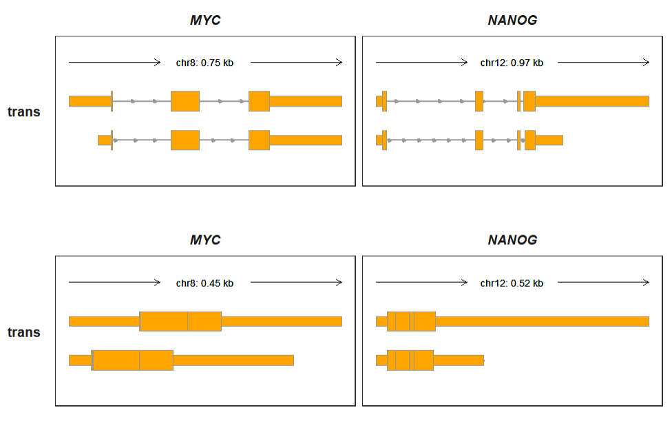

Chapter 9 Other funs
9.1 Transcript coordinate transformation
Mostly we draw transcript structures on genomic coordinates which contain intron sequence. Sometimes you just want to compare multiple transcripts for a gene with removing introns. transCoordTransform allows you to transform the genomic coordinate into absolute coordinate from gtf file.
Here are the examples:
library(patchwork)
# gtf
raw_gtf <- rtracklayer::import.gff("test-bw2/hg19.ncbiRefSeq.gtf.gz",format = "gtf") %>%
data.frame()
p1 <-
trackVisProMax(Input_gtf = raw_gtf,
Input_gene = c("MYC","NANOG"))
p1Transforming coordinate:
tgene <- raw_gtf %>% filter(gene_name %in% c("MYC","NANOG"))
trans_gtf <- transCoordTransform(gtf_file = tgene)
# check
head(trans_gtf[1:3,1:8])
# seqnames start end width strand source type score
# 1 chr12 1 2049 6660 + ncbiRefSeq.2021-05-17 transcript NA
# 2 chr12 1 364 364 + ncbiRefSeq.2021-05-17 exon NA
# 3 chr12 365 627 263 + ncbiRefSeq.2021-05-17 exon NA
p2 <-
trackVisProMax(Input_gtf = trans_gtf,
Input_gene = c("MYC","NANOG"))
p2
9.2 Track overlap
For some experiments, you got IP(immunoprecipitation) and Input group, maybe you need to put them together to compare difference of signals. One way we can assign a new fileName column and set fill colors with your experiment groups. Examples showed here:
First we assign new columns for bigwig data:
library(BioSeqUtils)
library(ggplot2)
# load bigwig files
file <- list.files(path = "test-bw/",pattern = '.bw',full.names = T)
file
# [1] "test-bw/1cell-m6A-1.bw" "test-bw/1cell-m6A-2.bw" "test-bw/1cell-RNA-1.bw"
# [4] "test-bw/1cell-RNA-2.bw" "test-bw/2cell-m6A-1.bw" "test-bw/2cell-m6A-2.bw"
# [7] "test-bw/2cell-RNA-1.bw" "test-bw/2cell-RNA-2.bw"
# select some chromosomes for test
bw <- loadBigWig(file,chrom = c("5","15"))
# check
head(bw,3)
# seqnames start end score fileName
# 1 15 1 3054635 0.00000 1cell-m6A-1
# 2 15 3054636 3054640 1.34079 1cell-m6A-1
# 3 15 3054641 3054715 2.68159 1cell-m6A-1
bw_new <- bw
bw_new$new_name <- paste(sapply(strsplit(bw_new$fileName,split = "-"),"[",1),
sapply(strsplit(bw_new$fileName,split = "-"),"[",3),sep = "-")
bw_new$exptype <- sapply(strsplit(bw_new$fileName,split = "-"),"[",2)
bw_new$fileName <- bw_new$new_name
# order
bw$exptype <- factor(bw$exptype,levels = c("m6A","RNA"))
# check
head(bw_new)
# seqnames start end score fileName new_name exptype
# 1 15 1 3054635 0.00000 1cell-1 1cell-1 m6A
# 2 15 3054636 3054640 1.34079 1cell-1 1cell-1 m6A
# 3 15 3054641 3054715 2.68159 1cell-1 1cell-1 m6A
# 4 15 3054716 3054720 1.34079 1cell-1 1cell-1 m6A
# 5 15 3054721 3060760 0.00000 1cell-1 1cell-1 m6A
# 6 15 3060761 3060765 1.34079 1cell-1 1cell-1 m6A
# gtf
gtf <- rtracklayer::import.gff("Mus_musculus.GRCm38.102.gtf",format = "gtf") %>%
data.frame()Plot for all samples:
Plot for overlap tracks, we can see the difference of ip(m6A) and input(RNA) better:
9.3 Extend coordinate for gene
You may want to extend to a specific coordinate when you plot track for a gene, such as focus on near the TSS(transcript start site). xlimit_range can be defined with exact genomic coordinate for each gene.
Let’s show whole the gene structures:
# load bigwig files
file <- list.files(path = "../bw/",pattern = '.bw',full.names = T)
file
# select some chromosomes for test
bw <- loadBigWig(bw_file = file[1:2],chrom = c("chr15"),format = "bw",file_name = c("test1","test2"))
# check
head(bw,3)
# gtf
my_gtf <- rtracklayer::import.gff("../Mus_musculus.GRCm38.102.gtf.gz",format = "gtf") %>%
data.frame()
my_gtf$seqnames <- paste("chr",my_gtf$seqnames,sep = "")
# plot
# Il7r
trackVisProMax(Input_gtf = my_gtf,
Input_bw = bw,
Input_gene = c("Il7r"))Given a specific genomic coordinate:
# 9515784-9550038
trackVisProMax(Input_gtf = my_gtf,
Input_bw = bw,
Input_gene = c("Il7r"),
xlimit_range = c(9515784,9555038))The gene structures will be shown if the genomic coordinate is out of the target gene:
# 9268339-9542382
trackVisProMax(Input_gtf = my_gtf,
Input_bw = bw,
Input_gene = c("Il7r"),
xlimit_range = c(9268339,9542382))Multiple target genes with xlimit_range list: